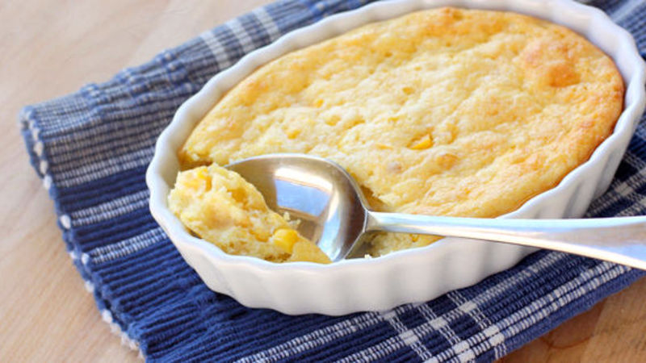

Corn Pudding

Ingredients
- 5 Eggs
- 1/3 C. Butter, Melted
- 1/4 C White Sugar
- 1/2 C Milk
- 4 Tbs Cornstarch
- 1(14 oz) can Corn kernals
- 2(14.75 oz) cans Cream-style corn
Directions
- Preheat oven to 400 Degrees F (200 degrees C). Grease a 2 quart casserole dish.
- In a large bowl, lightly beat eggs. Add melted butter, sugar, and milk. Whisk in cornstarch. Stir in corn and creamed corn. Blend well. Pour mixture into prepared casserole dish.
- Bake for 1 hour.